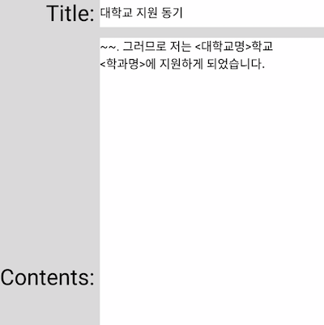
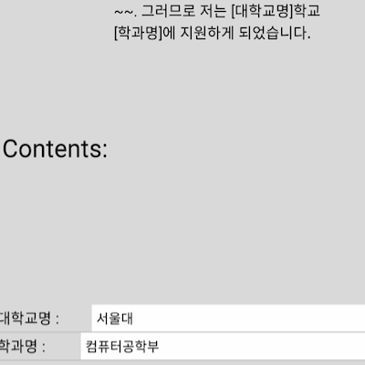
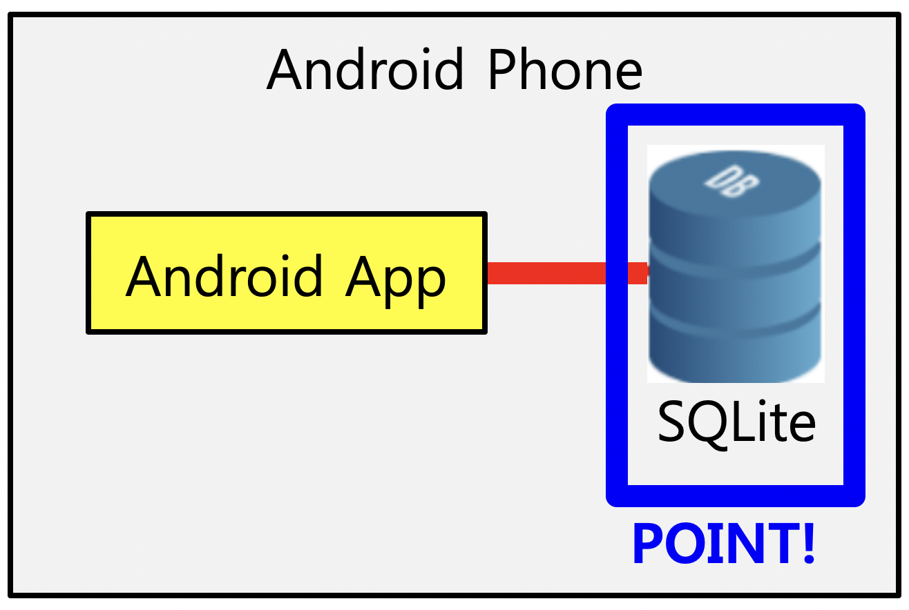
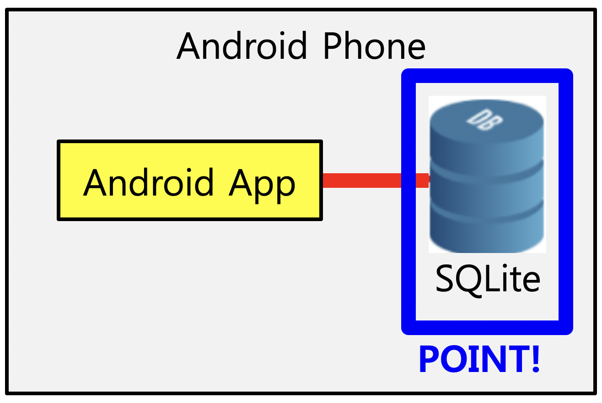

구현 기능

|
자기소개서 목록 조회 기능 현재 저장된 자기소개서 목록을 볼 수 있습니다. |
|  |
자기소개서 작성 기능 자기소개서를 새롭게 작성할 수 있습니다. 이때, ’<‘ 와 ‘>’ 로 빈 칸을 배치할 수 있습니다. |
|  |
자기소개서 배포 기능 자기소개서 내의 빈 칸을 채워서 원하는 글로 배포할 수 있습니다. |
사회에 기여하려고 한 점
자기소개서 내용에 빈 칸 배치하는 방식을 통해 여러 자기소개서를 하나로 통합해서 관리하므로 굉장히 편리하고 오탈자가 생기는 실수도 훨씬 줄어듭니다. 또한, 취업 자기소개서 뿐만 아니라 대학원 학업계획서, 대외활동 지원서 등에도 활용할 수 있습니다.
자기소개서 내용에 빈 칸 배치하는 방식을 통해 여러 자기소개서를 하나로 통합해서 관리하므로 굉장히 편리하고 오탈자가 생기는 실수도 훨씬 줄어듭니다. 또한, 취업 자기소개서 뿐만 아니라 대학원 학업계획서, 대외활동 지원서 등에도 활용할 수 있습니다.
배경과 목적
기업별로 자기소개서를 따로 작성해서 따로 관리하면 한 가지를 수정할 때 나머지도 일일이 다 수정해야 하므로 굉장히 불편하고, 잘못하면 오탈자가 생길 수 있습니다. 만약 한 곳에만 지원한다면 괜찮겠지만 취업은 확률 싸움이므로 한 곳에만 지원하는 구직자는 없을 것입니다.
기업별로 자기소개서를 따로 작성해서 따로 관리하면 한 가지를 수정할 때 나머지도 일일이 다 수정해야 하므로 굉장히 불편하고, 잘못하면 오탈자가 생길 수 있습니다. 만약 한 곳에만 지원한다면 괜찮겠지만 취업은 확률 싸움이므로 한 곳에만 지원하는 구직자는 없을 것입니다.
배운 점
- Android에서 SQLite를 구축한 후 데이터를 삽입, 수정, 조회, 삭제하는 법을 알게 되었습니다.
- Android에 공유하기 기능을 추가하는 법을 알게 되었습니다.
- Android에서 ListView를 활용하는 법을 알게 되었습니다.
- Android 앱을 구현하는 법을 알게 되었습니다.
진행 절차
- 우선 자기소개서 내용을 영구히 저장해야 하므로 ‘안드로이드 프로그래밍’ 책에 있는 앱 내에서 SQLite DB 생성 후 데이터 저장 예제를 실행하였습니다.
- 자기소개서를 항목 별로 목록으로 보여줘야 하고 자기소개서마다 수정, 삭제, 내보내기 기능이 있어야 하므로 목록마다 버튼이 있어야 합니다. 따라서, ListView 항목마다 버튼 배치하는 예제를 구글에서 찾은 후 실행하였습니다.
- 지금까지 실행한 예제들을 하나로 합치고 버튼 터치 시 해당 내용이 수정되거나 삭제되도록 해서 자기소개서를 항목 별로 관리하는 기능을 구현하였습니다.
- 화면 맨 아래쪽에 ‘추가’ 버튼을 배치해서 자기소개서를 추가하는 기능을 구현하였습니다. 이 때 꺾쇠괄호(<, >)를 입력해서 빈 칸을 배치하도록 하였습니다.
- 내보낼 때는 자기소개서 작성 시 만들었던 빈 칸을 채울 수 있도록 해야 하므로 ListView 항목마다 버튼 배치하는 예제에서 버튼만 입력칸으로 바꿔서 항목마다 입력칸을 배치하였습니다.
- 그러나 ListView 항목마다 입력칸의 내용을 모두 추출하는 방법을 몰라서 구글에서 예제 코드를 찾은 후 참고해서 입력한 내용을 자기소개서 내용에 반영하는 기능을 구현하였습니다.
- 마지막으로 공유하기 예제를 구글에서 찾은 후 참고해서 자기소개서 내용을 카카오톡 등으로 내보내는 기능을 구현하였습니다.
- 이렇게 해서 원하는 프로그램을 구현할 수 있었습니다.
역량 강화를 위해 가장 노력한 점
앱 내에서 SQLite DB 생성 및 데이터 저장, ListView를 새롭게 활용
앱 내에서 SQLite DB 생성 및 데이터 저장, ListView를 새롭게 활용
전체 구조


사용 기술
Android, Java, SQLite
Android, Java, SQLite
개발 환경
Android Studio
Android Studio